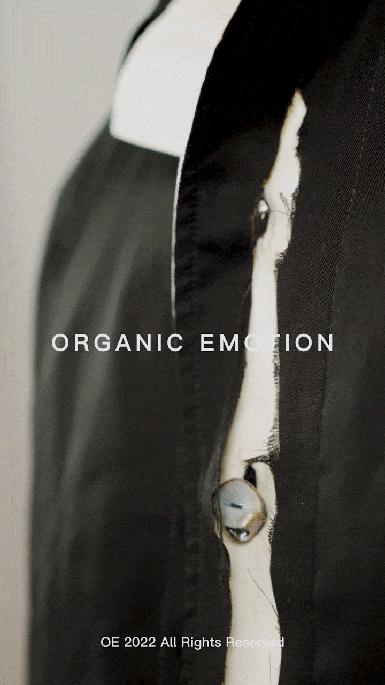
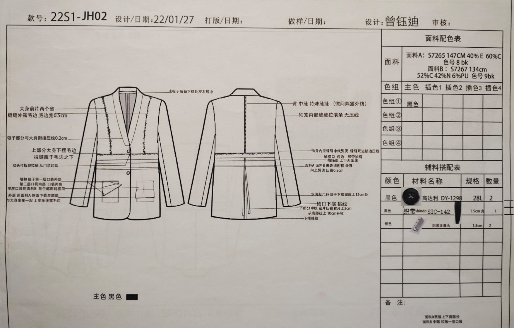
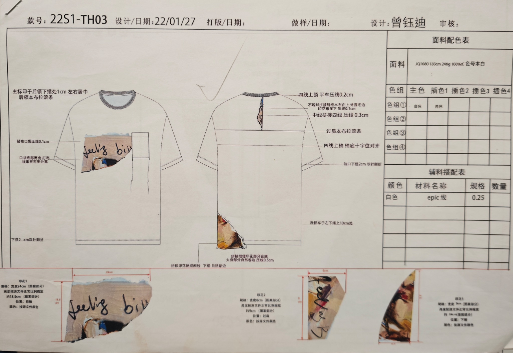
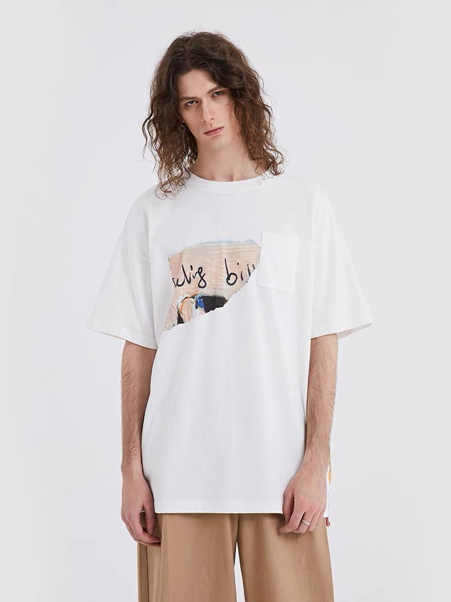

FASHION / COLLECTION DEVELOPMENT
Organic Emotion
Self Division / in detail

SELF DIVISION
Contradictions
in balance.
Self Division begins with the contradictions within each person. Splicing, deconstruction and disrupted details make visible the complexity of an individual consciousness: its elements collide and split, yet must coexist. The collection seeks an outward balance held together by this uneasy symbiosis.
Details change automatically. Hover, focus or touch the frame to pause.
Collection overview

Brand / role
A language of self-expression.
Organic Emotion is a genderless fashion brand centered on the self. It holds that every emotion deserves to exist and to be felt, whether positive, negative or even a sense of feeling nothing. The brand draws on popular culture and self-expression to build a world for each singular person.
My role · Design Director
I led collection development across concept, garment design and product direction, translating a visual idea into construction decisions, technical documentation, samples and finished pieces. The work required coordination across creative and production teams while balancing design intent with materials, cost and manufacturability.
From design to garment
Decisions become details.
Selected design sheets document fabrics, color placement, construction and trims. The finished garments show how those decisions meet the body.




Garment in motion